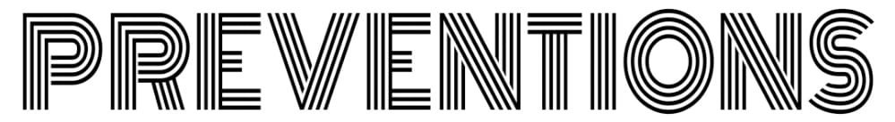

|  |
COVID-19 spreads mainly from person to person through respiratory droplets. Respiratory droplets travel into the air when you cough, sneeze, talk, shout, or sing. These droplets can then land in the mouths or noses of people who are near you or they may breathe these droplets in.
Masks are a simple barrier to help prevent your respiratory droplets from reaching others. Studies show that masks reduce the spray of droplets when worn over the nose and mouth.
You should wear a mask, even if you do not feel sick. This is because several studies have found that people with COVID-19 who never develop symptoms (asymptomatic) and those who are not yet showing symptoms (pre-symptomatic) can still spread the virus to other people. Wearing a mask helps protect those around you, in case you are infected but not showing symptoms.
It is especially important to wear a mask when you are indoors with people you do not live with and when you are unable to stay at least 6 feet apart since COVID-19 spreads mainly among people who are in close contact with one another.A cloth mask also offers some protection to you too. How well it protects you from breathing in the virus likely depends on the fabrics used and how your mask is made (such as the type of fabric, the number of layers of fabric, and how well the mask fits).
This shouldn't come as much of a surprise. One of the foremost benefits of hand sanitizer is just that:It sanitizers.These products were designed to kill germs,and they get the job done.